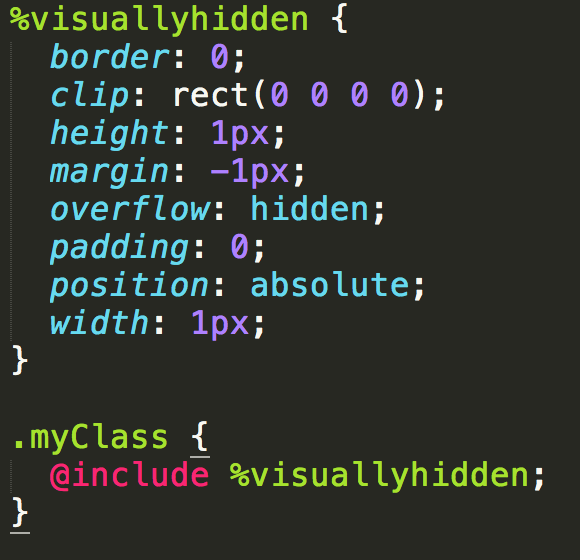
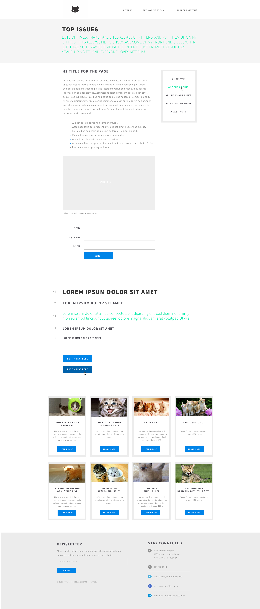

Making CSS more fun!
Created by Jessica Bell / @SirJessTheBrave
Agenda
- About Me
- What is SASS
- Folder Structure: Global, Components, Base
- Functionality: Variables, Extendables, Mixins
- SMACCS
- Time to get SASSY
- Profit
Who am I?

I'm Jess!
Who Am I?
- Jessica Bell
- Web Developer at Deloitte Digital
- Self taught: Degree in International Relations, General Assembly Bootcamp for Front End Web Development
- Community Leadership: DC FemTech, DC Tech Meetup
- GitHub: SirJessTheBrave
- Twitter: @sirJessTheBrave

Who Are You?
- Name
- Occupation/grade/thing that occupies most of your time
- Why you are here and what you want to learn
- Code level (NO SHAME HERE, we all start somewhere!)
- What is your Spirit Animal/persona/thing you love
Lets Go!
SOOO What is SASS?
SASS
SASS stands for Syntactically Awesome Style Sheets and is a CSS pre-processor that allows you to use programmatic functionality to write and better organize your CSS. Read all the SASS documentation at sass-lang.com/
SASS takes .SCSS files, and compiles them into a normal .CSS style sheet to be included in your project.
SASS is organized into folders with small portions of your style called partials. The meat of your SASS files will be your Components partials. The functionality of SASS comes from the Base partials: Mixins, Extendables, and Variables.
Time to get Sassy!
How SASS works
- Put styles in Partials
- Use Variables, Mixins, Extendables for functionality
- Nest your styles for organized CSS specificity
- Import partials
- Output Style sheet
The SASS Folder Structure
- Global: Your global layout including typography, base form styles, and html elements
- Components: Your modules, states, and section layouts
- Base: Your Variables, Mixins, Extendables, and Vendor style sheets (normalize, formalize, reset ect bold
Global: styles to be applied globally
- Global Layout
- Typography
- Forms
Components: site specific reusable bits
Modular sections of you page. Repeatable bits of code. For example: Header/Footer, side-bar, display for blog articles, hero images, ect.
Base: the functionality of SASS
- Variables
- Extendables
- Mixins
Variables
A bucket to store ONE peice of information
Extendables
REUSABLE chunks of CSS
Mixins
DYNAMICALLY generated chunks of css
Breaking down a site
SMACSS
SMACSS stands for Scalable and Modular Architecture for CSS and is a way of organizing one's css is a more reusable and sectioned out way. It is NOT a library or framework, but a way of styling and organizing your css. It was written by Jonathan Snook and is freely available on-line.
Get the free SMACS Online book at SMACSS.com
Categories of SMACSS
Base: The most basic layout of your page/site
Layout: Holding one or more 'modular' sections together
Module: Reusable chunks of code
State: The look of a particular module while in a certain state such as hover, active, expanded, on mobile
Theme: Often not required, but describe how the modules or layouts might look
Naming Conventions
Naming conventions are very important to writing clean, well understood code. This is only a sample of how you COULD do naming conventions - the key is to define and stick with a convention
Why SMACSS and SASS?
SASS has a folder structure that is parsed out into categories and smaller functional components, which works really well with SMACSS theory. It also is necessary to have good naming conventions in your variables, mixins, and extendibles for clean, clear, readable SASS
Work Point
Lets get set up with SASS!
Option 1: Install and compile locally
- Fork and clone the 'Minimal Site'< repo from my Git Hub account
- Run 'gem install sass' to install sass
- Run 'gem install sass' to install SASS
- Change a line in your SCSS
- Run the following command in your terminal: sass sass/style.scss stylesheets/style.css
- Celebrate!

Option 2: Cloud9
- Head to c9.io and sign up for a free account
- Fork and clone the 'Minimal Site'< repo from my Git Hub account
- Open up the project in your Cloud9 account create a 'blank' workspace
- Run 'gem install sass' to install SASS
- Change a line in your SCSS
- Run the following command in your terminal: sass sass/style.scss stylesheets/style.css
- Celebrate!

Option 3: Install and use Gulp to compile locally
- Fork and clone the 'Minimal Site'< repo from my Git Hub account
- Make sure you have NODE, NPM, SASS, and GULP installed
- Run NPM install
- Run 'gulp'
- Change a line in your SCSS
- Celebrate!
Thank you!

Contact Me:
- Twitter: @SirJessTheBrave
- GitHub: SirJessTheBrave
Resources: